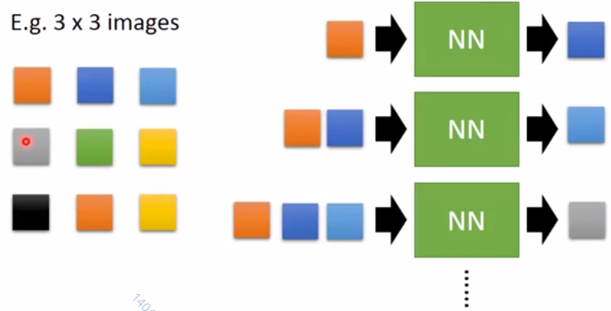
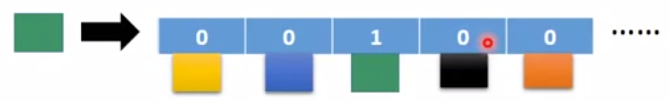
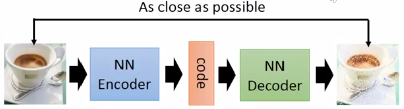
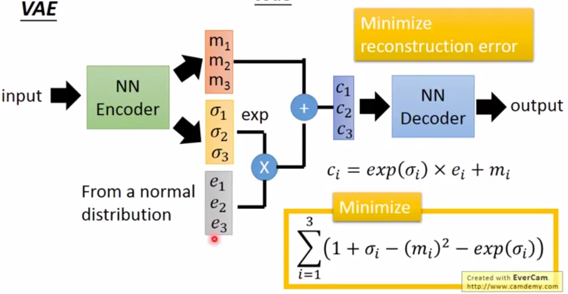
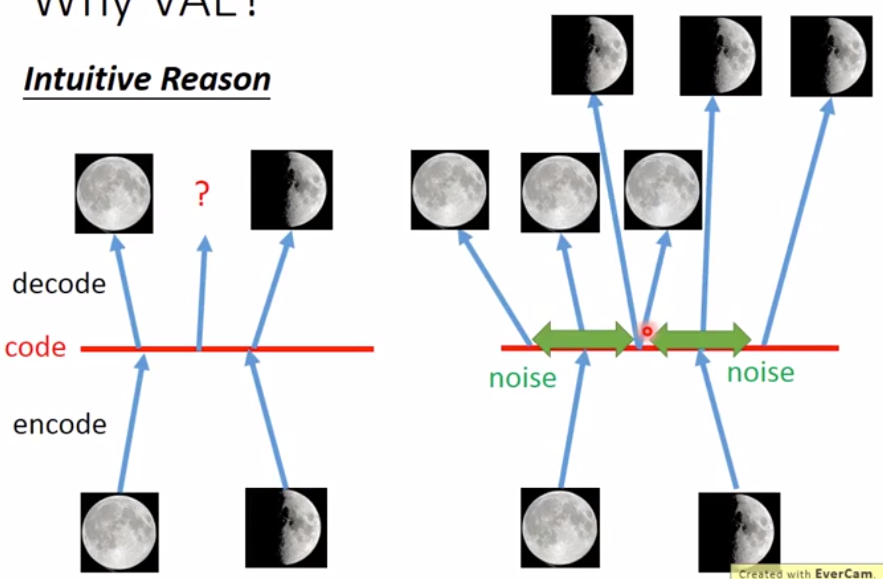
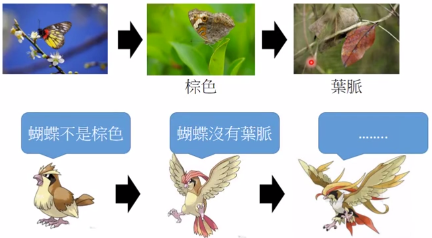

1. 方法一：Pixel RNN
每次使用RNN生成一个像素，直至最后生成一整张图。
一个像素用一个向量表示。

优点：无监督学习，训练时只需要输入图像，不需要annotation。
这种方法也可以用于语音合成或视频生成。
Tip:
想要生成的图像颜色鲜明，像素的RGB三个值要差别够大。如果三个值差不多大，生成的图像是灰色的。
如果使用向量来代表一个像素，向量的值由sigmoid生成。sigmoid倾向于落在0.5附近，使得RBG值都差不多，生成出的图像是“水墨风”。
改进方法：
用1 of N encoding方法表示像素的颜色

2. 方法二：VAE
2.1. 模型结构
VAE = Viational auto encoder
对比Auto Encoder的模型：

VAE的模型为：

- NN encoder生成2个向量，分别是和
- 基于标准正态分布生成随机向量e
- 目标增加一项，最小化
2.2. VAE的应用
2.2.1. 可以控制要画的image
假如中间生成的c是10维的，
- 输入一张图像，得到10维的向量c
- 固定其中8维
- 在剩下的2维空间中均匀取点，每个点结合第2步中的8维都可以生成一张图像。
- 观察每个维度的变化对生成图像的意义。
缺点：生成的结果不太清晰
2.2.2. 用于语音可以生成文本
使用上图的模型，但输入和输出都是同一个句子的向量。
- 任意找两个句子，把它们映射到code空间，得到两个点
- 将两点相连，中间等间隔取点
- 把中间的点用decoder还原，生成新的句子
2.3. VAE的原理
2.3.1. 直观解释

对普通auto-encoder，一个输入对应一个code，通过code能生成与输入相同的输出。如果两个输入分别得到两个code，很难约束两个code的中间向量应该输出什么。
在VAE算法中:
- encoder阶段：一个输入计算出它的真实code以后，会在这个code上加一点noise，作为它最终的code。
- decoder阶段：期望code加上noise之后的向量（一个范围内的向量）都能decode出原始图像。
由于noise的随机性，code + noise代表一个范围内的所有向量。
这样，两张原图得到的code范围可以有交叠，交叠部分的向量decode出来的图像应该同时像两张图，即两张图的中间结果。
模型中的目标函数：
m: 图像生成的code
c: m加上noise之后的code
：noise的方差，exp是为了保证方差一定是正的。
代表L2正则化
：画图可以看出这个函数的效果。 目标是让noise的方差不要太小。
2.3.2. 公式解释
假设每张图像都是高维空间中的X
目标是评估P(x)分布，然后根据P(x)分布sample出一张图
假设P(x)符合高斯混合模型，即
其中，每个m代表一个高斯分布，P(m)代表第m个高斯分布出现的概率。p(x|m)代表第m个高斯分布中sample出x的概率。
这里的m符合Multinoulli 分布。但在VAE中，M本身也是一种连续型的分布z。
这个模型可以看作是有无数个高斯模型的混合。而由encoder训练得出。实际上P(x|z)也可以是其它模型。因为NN可以拟合出任意模型。
目标是最大化已经观察到的x的概率：
公式推导过程略，最后结果是：最小化以下公式
公式的第一项代表最大化分布q(z|x)和分布p(z)的KL散度，化简出来就是前面提到的。
公式第二项代表encoder与decoder的交叉熵，即输入和输出越接近越好。
2.4. VAE的缺点
只能产生一张与database一样的image，或者把database中的image融合到一起。 --- 模仿
不能产生一张全部的image。 --- 创造
3. 方法三： GAN Generative Adversarial Network
3.1. 原理

上面的蝴蝶代表Generative模型，用于生成结果。
下面的鸟代表Descriminator模型，用于鉴别结果是真实的还是由G模型生成的。
G模型和D模型势均力敌，互相促进，最终都得到了进化。
3.2. 训练步骤
- G0随机生成一些图像
- D使用真实图像和G0生成的图像来更新参数，得到一个能鉴别G0的D0。
- G0更新参数，目标是得到能在D0上得到高分（骗过D）的G1。
- D再根据真实图像和G1训练出D1。
- 如此反复，直至G能产生高质量的图像。
在这个过程中，只有D见过database的图像，G没有见过。G只是不断是尝试骗过D。所以G能创建图像。
3.3. GAM的难点
- 难以优化
- 难以判断G的好坏。如果D不能识别G，不一定是因为G太强，也有可能是因为D太弱了。
- 平衡G和D的关系，保持势均力敌。